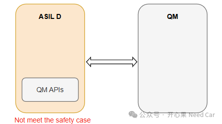
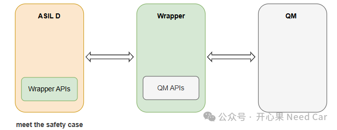

开心果 Need Car · 2026-06-05T06:20:00+08:00 · 微信原文
随着汽车电子化、智能化程度的不断提高，车辆中集成的电子控制单元（ECU）和软件系统日益复杂。功能安全作为汽车电子系统设计的核心要求，直接关系到驾乘人员的生命安全和车辆的正常运行。在ISO 26262功能安全标准中，ASIL（Automotive Safety Integrity Level，汽车安全完整性等级）从A到D四个等级，其中ASIL-D代表了最高的功能安全要求，而QM（Quality Management，质量管理）则仅满足基本的质量管理要求，不具备专门的功能安全措施。
在实际的汽车软件开发过程中，不同安全等级的软件模块往往需要共存于同一系统中。如何实现ASIL-D软件与QM软件之间的安全通信与交互，是功能安全架构设计中的关键难题。
直接访问的风险与危害

当ASIL-D软件直接调用QM软件提供的功能时，系统将面临严重的功能安全风险。
首先，QM软件未经过ASIL-D级别的开发流程验证，其潜在的逻辑错误、时序异常或数据处理缺陷都可能通过调用链传导至ASIL-D模块，导致整个系统的安全完整性等级从ASIL-D降级。
其次，直接访问违反了功能安全设计的核心原则——独立性。ASIL-D组件应当尽可能避免对低安全等级组件的依赖，因为任何低安全等级组件的故障都可能成为ASIL-D组件的系统性失效源。在功能安全评估与认证过程中，这种直接依赖关系往往不被安全审计人员接受，无法通过功能安全审核。
再次，直接访问使得安全责任边界模糊。当系统中出现安全相关故障时，难以快速定位是ASIL-D模块本身的问题，还是因为调用了QM模块而引入的问题，导致安全分析与故障排查的复杂化。
封装架构的解决方案
针对上述问题，业界普遍采用封装（Wrapper）架构来实现在保持QM软件现有代码不变的前提下，安全地访问其功能，示意如下：

封装层的核心作用体现在以下几个方面：
1. 安全隔离与依赖倒置
封装层位于ASIL-D模块与QM模块之间，充当安全的中间桥梁。ASIL-D模块不再直接调用QM模块的接口，而是调用封装层提供的接口。封装层内部再实现对QM模块的调用。这种设计与软件工程中的依赖倒置原则一脉相承，使得ASIL-D模块完全依赖于定义清晰的封装层接口，而非不确定的QM实现细节。
2. 错误检测与故障响应
封装层可以植入ASIL-D级别的安全监控机制，对QM模块的返回值、执行时间、资源占用等关键参数进行实时检测。一旦发现异常，封装层可以执行预定义的故障响应策略，如错误报告、数据回滚或系统降级运行。这些安全机制无需修改QM模块本身的代码，最大程度减少了开发成本和回归测试的工作量。
3. 接口最小化
封装层只暴露QM模块中ASIL-D真正需要的核心功能，隐藏不必要的内部实现细节。这种接口最小化策略降低了ASIL-D模块对QM模块的依赖范围，减少了不可控因素。同时，经过精心设计的封装接口本身也可以满足ASIL-D的开发与验证要求，获得相应的安全认证。
4. 兼容现有代码
ISO26262明确提到：“ASIL-D modules should call the wrappers instead of the QM. The ASIL-D module should update the code, QM module do not need update。”这一设计理念具有重要的工程实践意义——在存量系统的功能安全升级过程中，无需对大量已有的QM代码进行全面改动，仅需修改ASIL-D模块的调用方式，并新增一个经过安全验证的封装层，即可实现功能安全合规。
实施建议
在实际项目中部署封装架构时，建议遵循以下步骤：
模块分析：梳理系统中所有ASIL-D与QM模块的调用关系，识别需要增加封装层的接口。
接口定义：为每对ASIL-D与QM的交互定义清晰的封装层接口，包含输入验证、输出监控和错误处理逻辑。
安全验证：对封装层进行独立的ASIL-D级别安全验证，包括故障注入测试和边界条件测试。
集成测试：验证ASIL-D模块通过封装层调用QM模块后的系统行为是否符合功能安全要求。
文档与审计：保留封装层的设计文档和验证记录，作为功能安全审计的支撑材料。
结论
ASIL-D软件不能直接访问QM软件的根本原因在于功能安全的独立性原则和安全等级不匹配带来的系统性风险。封装架构通过在两者之间引入一个经过安全设计和验证的中间层，实现了安全隔离、错误监控与接口规范化的目标。这种设计不仅兼容现有QM代码，避免大量重复开发，更使整个系统在功能安全审计中具备了明确的责任边界和可追溯的安全证据链。在未来的汽车电子系统开发中，封装架构将继续作为连接不同安全等级模块的标准化实践而广泛应用。
往期精彩回顾